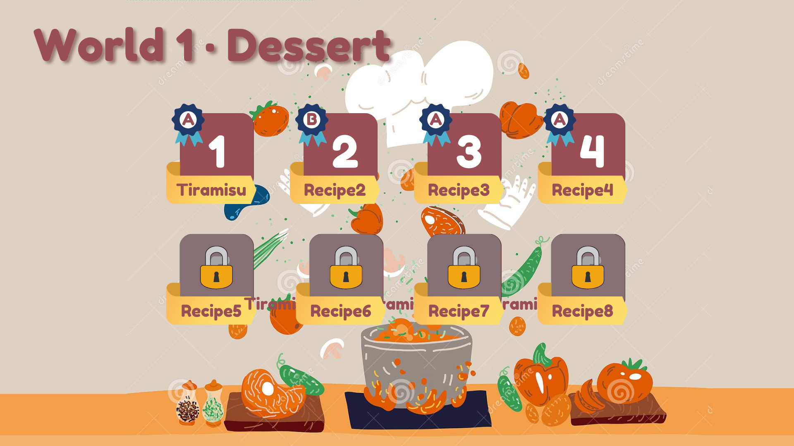
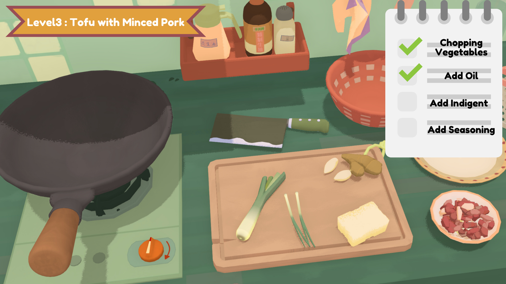

Cooking is a "subject" that many people learn in their lives, but few are taught systematically. Most schools do not teach cooking either. But it is an important issue for daily life and the waste of food in the traditional teaching of cooking. So I want to design a game that teaches how to cook. It is able to teach the basic knowledge of cooking in a virtual environment, the combination and appropriateness of various ingredients, as well as offering the possibility of some innovative recipes. In the game, the player plays an apprentice chef, hoping to pass the trial to become the world's best chef.
The game will be divided into different levels with dishes as the theme. Different dishes can be used at different world levels. For example, the first big world is ‘French desserts’, divided into different small levels such as tiramisu and cheesecake. When entering each small level there will be a scaffolding, a brief introduction to the dish, including the history of the origin, taste, and different styles of different regions. Then players need to choose the ingredients they need to use (just like Zombies, before entering the level, players select the plants they want to use.) After entering, the level is divided into three parts: preparing ingredients (washing, cutting, etc.), cooking, and decorating the dish. Players will follow brief instructions to complete the entire cooking process. Finally, the system AI will score and advise on further improvement (this step can be done by the computer or by a team of teachers)



Learning Goals:
Students will be able to master simple daily recipes.
Students will be able to simulate the process of cooking skillfully.
Learnihg Objectives
Students will be able to identify the characteristics and names of different ingredients.
Students will be able to remember the ingredients needed for different recipes and the steps to cook them.
Students will be able to follow step-by-step instructions to complete cooking.
Target Learners
Learners can be children or adults. But if I had to define an age group, it would probably be high school and above. They are already aware enough of safety precautions and can have basic common sense in cooking.
Leanring Theories
Motivation Theories
- Intrinsic & Extrinsic motivation
- Manipulation and distribution of knowledge
- Identity
Learning Theories
- Constructivism
- Metacognition
- Scaffolding